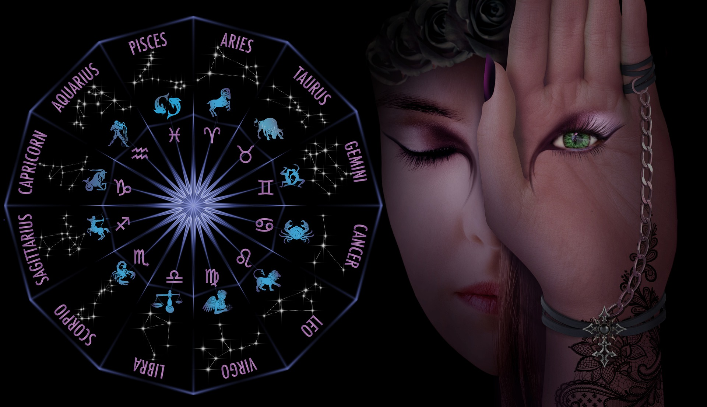

Nos événements
La différence apportée par Astrostar, nous venons à votre rencontre.
Nous organisons des événements dans plusieurs villes.
Vous pouvez rencontrer des professionnels de l'astrologie, obtenir des réponses à vos questions, suivre une initiation à l'astrologie.
Venez rencontrer notre équipe.
Notre prochain événement :

Le salon de l'astrologie du 13 au 15 janvier 2023 au Centre des Foires de Sherbrooke.
Qu'est-ce que l'astrologie ?
L'astrologie est l'étude des mouvements et des positions relatives des corps célestes interprétés
comme ayant une influence sur les affaires humaines et le monde naturel.
La position du soleil, des étoiles, de la lune et des planètes au moment de la naissance d'une personne
est censée façonner sa personnalité, affecter ses relations amoureuses et prédire son avenir économique.
Certaines personnes pensent que l'astrologie peut les aider à mieux se comprendre et à mieux comprendre les autres.
D'autres utilisent l'astrologie pour prendre des décisions concernant leur carrière, leurs finances et leurs relations.
Bien qu'il n'existe aucune preuve scientifique que l'astrologie puisse prédire l'avenir avec précision, de nombreuses
personnes la trouvent agréable et utile.
L'histoire de l'astrologie.
La pratique de l'astrologie traditionnelle remonte à plus de 4 000 ans et trouve ses racines
dans l'Égypte ancienne. La construction d'horoscopes était utilisée pour suivre les mouvements
des corps astraux, qui, selon les experts en astrologie, prédisent les événements futurs.
Le tableau d'astrologie est basé sur les constellations de la ceinture zodiacale et contient
douze signes astrologiques.
La ceinture zodiacale est une bande orbitale qui englobe les planètes de notre système solaire
(y compris la Terre).
Un signe du zodiaque est considéré comme étant lié avec les astres, et cette connexion est censée donner
un sens aux événements astrologiques.
Vous pouvez en apprendre plus sur l'histoire de l'astrologie sur notre site
Les signes astrologiques et les ascendants.
La compatibilité des signes.
Il existe 12 signes astrologiques différents, et chacun d'entre eux possède un ensemble unique de traits
et de caractéristiques.
Alors comment savoir quel signe vous convient le mieux? Visitez notre page dédiée à la compatibilité des signes.
La première étape consiste à identifier votre date de naissance. Une fois que vous connaissez votre date de naissance,
vous pouvez commencer à regarder sous quel signe vous êtes né.
Gardez toutefois à l'esprit que l'astrologie ne se limite pas à votre signe solaire.
Votre signe ascendant peut vous aider à mieux comprendre votre
personnalité et vos traits caractéristiques.
Si vous souhaitez en savoir plus, poursuivez votre lecture.
Les signes selon les 4 éléments, la polarité féminin / masculin et leur qualité cardinal / fixe / mutable :
L'astrologie d'ailleurs.
Pour connaître d'autres types d'astrologies et voyager à travers le monde. Retrouver les informations concernant l'astrologie chinoise,
aztèque, celtique et chamanique.